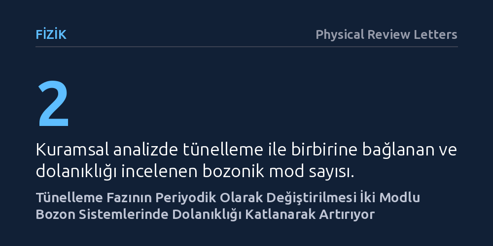

FIZIK · Physical Review Letters · 2026-09-09
Araştırmacılar, iki modlu bozonik kuantum sistemlerinde başlangıçta birbirinden bağımsız parçacıkların nasıl tam dolanık hale getirilebileceğini inceledi. Tünelleme etkileşiminin işaretinin periyodik olarak tersine çevrilmesiyle dolanıklığın katlanarak arttığı ve sistemlerin tamamen dolanık duruma ulaştığı analitik olarak kanıtlandı.
Kuantum teknolojilerinin temel kaynağı olan dolanıklığın, parçacıklar arasındaki doğal fiziksel sınırları aşacak biçimde harici faz kontrolüyle çok daha hızlı ve güçlü üretilebileceğini gösteriyor.

Kuantum bilgisayarlar ve ultra hassas algılayıcılar gibi yeni nesil teknolojiler, temelde parçacıkların birbirine görünmez bağlarla kenetlendiği kuantum dolanıklığı olgusuna dayanır. Ancak çok parçacıklı sistemlerde bu bağı kurmak ve en üst düzeye çıkarmak sanıldığı kadar kolay değildir. Parçacıkların birbirleriyle nasıl etkileştiğini belirleyen doğal fiziksel sınırlar ve sistemin ilk andaki bağımsız durumu, üretilebilecek dolanıklık miktarını ve hızını ciddi şekilde sınırlar.
Fizikçiler uzun süredir, başlangıçta birbirinden tamamen bağımsız olan parçacık gruplarını, sisteme dışarıdan aşırı karmaşık ve yıkıcı müdahaleler yapmadan nasıl tamamen dolanık hale getirebilecekleri sorusuna yanıt arıyordu. Doğal etkileşim sınırlarını aşacak temiz bir kontrol mekanizması bulmak, kuantum teknolojilerinin ölçeklenmesi açısından temel bir gereksinimdir.
Araştırmacılar bu sorunu incelemek için laboratuvarda fiziksel bir düzenek kurmak yerine, kuantum alan teorisinin sunduğu matematiksel araçları kullandı. İki ayrı kanalda bulunan ve aralarında kuantum tünelleme yoluyla geçiş yapabilen çok parçacıklı bozon sistemlerini analitik olarak ele aldılar. Parçacıkların bir kanaldan diğerine akışını yöneten etkileşim denklemleri doğrudan ve kesin matematiksel yöntemlerle çözüldü.
Kuramsal modelde araştırmacılar, sisteme sabit bir tünelleme hızı uygulamak yerine, belirli ve düzenli zaman aralıklarında tünelleme etkileşiminin işaretini ritmik olarak tersine çeviren stroboskopik bir faz modülasyonu tanımladı. Sistem kendi haline bırakılmak yerine tünelleme fazı periyodik olarak değiştirildiğinde, kuantum durumlarının zaman içindeki evrimi adım adım hesaplandı.
Yapılan kesin analiz, tünelleme işaretinin periyodik olarak değiştirilmesinin belirgin bir hızlandırıcı etki yarattığını gösterdi. Başlangıçta birbirinden tamamen bağımsız ve ayrık durumda bulunan iki modlu bozonik parçacık grupları, bu yöntem sayesinde çok kısa sürede birbirine tamamen dolanık hale gelebiliyor.
Buradaki en dikkat çekici bulgu, dolanıklık üretim hızındaki artışın doğrusal değil, katlanarak (üstel) gerçekleşmesidir. Klasik ve sabit tünelleme yaklaşımlarında sistemin doğal dinamikleri nedeniyle dolanıklık sınırlı bir seviyede kalırken, stroboskopik faz çevirme yöntemi parçacıkların eksiksiz biçimde kenetlenmesini mümkün kılıyor.
Bu çalışma, yüksek dolanıklık elde etmek için karmaşık lazer düzenekleri veya aşırı güçlü dış kuvvetler yerine, var olan etkileşimin fazını akıllıca ve ritmik olarak yönetmenin yeterli olabileceğini ortaya koyuyor. Fotonlar veya lazerle hapsedilmiş soğuk atom bulutları gibi bozonik yapılar kuantum bilgi işlemede kritik rol oynadığından, bu yaklaşım pratik protokol tasarımlarına kuramsal bir zemin sunuyor.
Bununla birlikte, ortaya konan sonuç şimdilik kuramsal ve kesin bir matematiksel kanıttan ibarettir. Gerçek laboratuvar ortamlarında parçacıkların çevreyle etkileşime girerek dolanıklığı zayıflatması (dekoherens) ve faz çevirme zamanlamasındaki olası deneysel hatalar yöntemin verimini etkileyebilir. Bir sonraki temel aşama, bu matematiksel modelin optik çiplerde ya da süperiletken devrelerde deneysel olarak test edilmesidir.